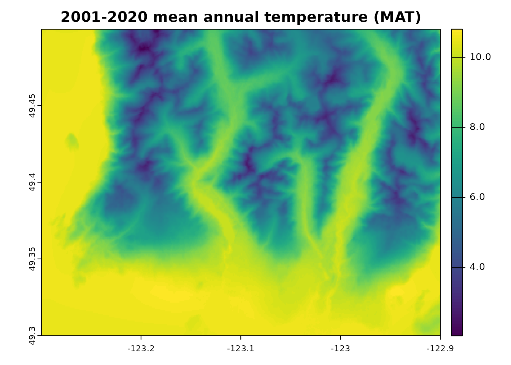

Beginner `climr` workflow
climr_workflow_beg.RmdUsing the climr_downscale() function
The basic use of climr is to pass a
data.table of point coordinates, IDs and elevation to
climr_downscale() and select the type of climate projection
or values wanted - e.g. below we ask for future projections in two
periods, using two emissions scenarios and two General Circulation
Models. We also specify we want 3 individual runs of each model/scenario
combination, in addition to the ensemble mean (returned by default).
library(climr)
## provide a data.frame or data.table of point coordinates, IDs and elevation
my_points <- data.frame(
lon = c(-123.4404, -123.5064, -124.2317),
lat = c(48.52631, 48.46807, 49.21999),
elev = c(52, 103, 357),
id = LETTERS[1:3]
)
## climr query for the data.frame
ds_out <- climr_downscale(
xyz = my_points, which_normal = "auto",
gcm_models = c("GFDL-ESM4", "EC-Earth3"), # specify two global climate models
ssp = c("ssp370", "ssp245"), # specify two greenhouse gas concentration scenarios
gcm_period = c("2001_2020", "2041_2060"), # specify two 20-year periods
max_run = 3, # specify 3 individual runs for each model
vars = c("PPT", "CMD", "CMI")
)
#> ...The resulting output is a data.table, printed below:
| id | GCM | SSP | RUN | PERIOD | PPT | CMD | CMI |
|---|---|---|---|---|---|---|---|
| A | NA | NA | NA | 1961_1990 | 928.7883 | 326.7553 | 1376.148 |
| A | EC-Earth3 | ssp245 | ensembleMean | 2001_2020 | 929.0297 | 352.6584 | 1416.170 |
| A | EC-Earth3 | ssp245 | ensembleMean | 2041_2060 | 947.5847 | 393.9759 | 1509.794 |
| A | EC-Earth3 | ssp245 | r15i1p1f1 | 2001_2020 | 919.0635 | 348.1030 | 1405.556 |
| A | EC-Earth3 | ssp245 | r15i1p1f1 | 2041_2060 | 942.5953 | 389.5754 | 1491.089 |
| A | EC-Earth3 | ssp245 | r1i1p1f1 | 2001_2020 | 947.4847 | 352.2455 | 1441.171 |
| A | EC-Earth3 | ssp245 | r1i1p1f1 | 2041_2060 | 1031.0003 | 402.0810 | 1595.313 |
| A | EC-Earth3 | ssp245 | r4i1p1f1 | 2001_2020 | 909.0707 | 363.3884 | 1388.504 |
| A | EC-Earth3 | ssp245 | r4i1p1f1 | 2041_2060 | 919.1813 | 402.4198 | 1473.763 |
| A | EC-Earth3 | ssp370 | ensembleMean | 2001_2020 | 914.9052 | 354.5477 | 1409.967 |
| A | EC-Earth3 | ssp370 | ensembleMean | 2041_2060 | 961.2700 | 375.8172 | 1536.606 |
| A | EC-Earth3 | ssp370 | r15i1p1f1 | 2001_2020 | 921.0167 | 358.2286 | 1414.007 |
| A | EC-Earth3 | ssp370 | r15i1p1f1 | 2041_2060 | 978.3669 | 369.5064 | 1553.831 |
| A | EC-Earth3 | ssp370 | r1i1p1f1 | 2001_2020 | 884.2664 | 373.0252 | 1373.188 |
| A | EC-Earth3 | ssp370 | r1i1p1f1 | 2041_2060 | 907.4876 | 384.9492 | 1467.100 |
| A | EC-Earth3 | ssp370 | r4i1p1f1 | 2001_2020 | 930.8694 | 346.2360 | 1427.222 |
| A | EC-Earth3 | ssp370 | r4i1p1f1 | 2041_2060 | 1025.2516 | 353.7353 | 1611.240 |
| A | GFDL-ESM4 | ssp245 | ensembleMean | 2001_2020 | 921.9572 | 351.1378 | 1387.894 |
| A | GFDL-ESM4 | ssp245 | ensembleMean | 2041_2060 | 977.7589 | 388.8723 | 1520.069 |
| A | GFDL-ESM4 | ssp245 | r1i1p1f1 | 2001_2020 | 925.7655 | 348.5659 | 1384.265 |
| A | GFDL-ESM4 | ssp245 | r1i1p1f1 | 2041_2060 | 964.2247 | 382.5887 | 1513.904 |
| A | GFDL-ESM4 | ssp245 | r2i1p1f1 | 2001_2020 | 905.3197 | 349.5286 | 1371.621 |
| A | GFDL-ESM4 | ssp245 | r2i1p1f1 | 2041_2060 | 989.8228 | 391.5322 | 1522.077 |
| A | GFDL-ESM4 | ssp245 | r3i1p1f1 | 2001_2020 | 934.7865 | 355.3161 | 1407.986 |
| A | GFDL-ESM4 | ssp245 | r3i1p1f1 | 2041_2060 | 979.2291 | 392.4948 | 1524.236 |
| A | GFDL-ESM4 | ssp370 | ensembleMean | 2001_2020 | 921.5469 | 361.7663 | 1380.581 |
| A | GFDL-ESM4 | ssp370 | ensembleMean | 2041_2060 | 960.4261 | 367.1315 | 1499.072 |
| A | GFDL-ESM4 | ssp370 | r1i1p1f1 | 2001_2020 | 921.5469 | 361.7663 | 1380.581 |
| A | GFDL-ESM4 | ssp370 | r1i1p1f1 | 2041_2060 | 960.4261 | 367.1315 | 1499.072 |
Listing available options
The list_* functions (see ?list_gcm) are useful to see
available options, for example:
list_gcm()
#> [1] "ACCESS-ESM1-5" "BCC-CSM2-MR" "CanESM5" "CNRM-ESM2-1"
#> [5] "EC-Earth3" "GFDL-ESM4" "GISS-E2-1-G" "INM-CM5-0"
#> [9] "IPSL-CM6A-LR" "MIROC6" "MPI-ESM1-2-HR" "MRI-ESM2-0"
#> [13] "UKESM1-0-LL"
list_gcm_period()
#> [1] "2001_2020" "2021_2040" "2041_2060" "2061_2080" "2081_2100"
list_ssp()
#> [1] "ssp126" "ssp245" "ssp370" "ssp585"These functions can be used as arguments in
climr_downscale(). For example,
vars = list_variables() could be specified to obtain data
for all available variables, or
gcm_models = list_gcm()[c(1,4,5,6,7,10,11,12)] could be
used to specify the eight-gcm ensemble recommended by Mahony et
al. (2022).
Working with raster data
A common use of climr is to obtain climate data for a
user-provided raster grid. Here is some sample code showing how to do
so. We convert a digital elevation model (DEM) into a table of points
(one per grid cell) which we use as the climr input table.
Then we take the climr input and populate the raster grid
with a climate variable.
library(terra)
library(data.table)
## get the sample digital elevation model (dem) provided with `climr`
dem_vancouver <- get(data("dem_vancouver")) |>
unwrap()
## convert the DEM to a data.frame
my_grid <- as.data.frame(dem_vancouver, cells = TRUE, xy = TRUE)
colnames(my_grid) <- c("id", "lon", "lat", "elev") # rename column names to what climr expects
## A simple climr query. This will return the observed 1961-1990 and 2001-2020 mean annual temperature (MAT) for the raster grid points.
ds_out <- climr_downscale(
xyz = my_grid,
historic_period = "2001_2020",
vars = c("MAT")
)
#> ..
## populate the raster grid with the downscaled climate values
my_clim <- rast(dem_vancouver) # use the DEM as a template raster
my_clim[ds_out[PERIOD == "2001_2020", id]] <- ds_out[PERIOD == "2001_2020", MAT] # populate the raster cells with the 2001-2020 mean annual temperature (MAT) values, using the `id` field as the link.
plot(my_clim, main = "2001-2020 mean annual temperature (MAT)")
See vignette("vignettes/climr_with_rasters.Rmd") for
more details on using climr with rasters and spatial
data.
Looking under the hood
You can download and investigate the raw data that climr
uses for downscaling, such as the reference climatological maps, the
observational time series, and the GCM anomalies. See the section
“Workflow with *_input functions and
downscale” in
vignette("vignettes/climr_workflow_int.Rmd") for an
example.